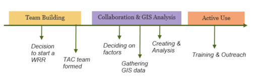

The Watershed Resources Registry (WRR) Initiative team has developed a transferable framework that guides states as they build out their own registry. If you're considering a WRR in your state, here are some thoughts to get you started.
A WRR consists of three essential components: collaboration, GIS-based analyses, and an interactive mapping application for sharing the results.
Collaboration includes primarily federal and state partners, particularly those that are charged with implementing Sections of the Clean Water Act (CWA). For example, the US Army Corps of Engineers (Corps) provides oversight for preventing and minimizing impacts to some of the nation's waters and wetlands through Section 404 of the CWA. The Corps shares this responsibility with the Environmental Protection Agency (EPA) and state agencies, which have developed their own resource protection mechanisms. Additionally, a successfully developed and deployed state WRR requires the investment and buy-in from a wide variety of government and non-profit entities in a given state. Thus, one of the first steps to creating a WRR requires the recruitment of a number of dedicated working professionals to form your state’s technical advisory committee.
This technical advisory committee will articulate a cohesive vision for the state’s conservation goals and develop GIS-based spatial analyses based on those goals. They will also communicate the needs and desires of their wider user base back to the core WRR Initiative team. This will allow for the addition of pertinent, state-specific datasets, reports, and tools.
Lastly, the WRR spatial analyses and corresponding data sets can be shared with the public through an interactive web mapping tool. This tool is built by our MES partners using a common ESRI framework that we adapt to meet each state’s needs and desires.
If you're just starting out, you might proceed as follows.
Once a state has an active WRR, the process becomes more iterative. For example, the spatial analyses might be updated as new land cover datasets become available, new techniques for performing spatial analyses might be evaluated, or new web mapping technologies come online. At any time, a state's WRR team might be focusing on analysis, education, training, improving the web site, updating the analyses, or all of the above.
For more information, contact Theresa Foye at tfoye@menv.com. or (443)-758-8872